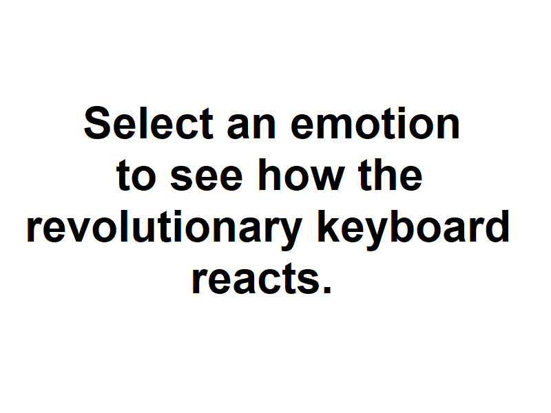

Artificial Intelligence Continues Development
Written by Skippy Dinglechalk

Apr. 20, 2027
At 9:15 am on October 13, 7 years ago: Open AI, an Elon Muskrat startup based in Florida released a keyboard like no other.

The Devastator V8.56 features a robotic arm with a built-in AI that will radically change the way we interact with our keyboards. To elaborate, a quote from software engineer Peter Ennis will clarify how the unit functions:
“The system utilizes a radial basis function neural network that analyses tactile input forces from the user to identify their emotions. In correlation to the emotions detected by the neural network, the arm will execute certain tasks/actions.”
Oct 15.
The following diagram, provided by Open AI, includes all the actions the arm is able to perform if the user is:

In conclusion, The Devastator V8.56 is a step into the future of human interaction with tactile input devices. It provides physical feedback based on emotions expressed by the user, unlike any keyboard before. Additionally, Open AI has disclosed they will be improving the number of arms in future systems. We face a bright future.